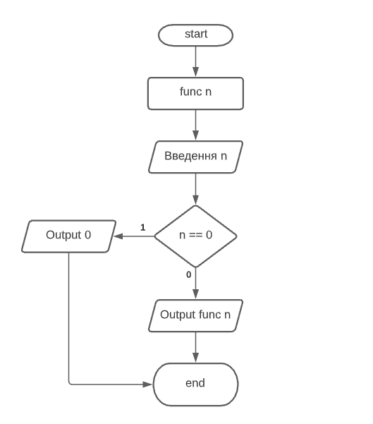
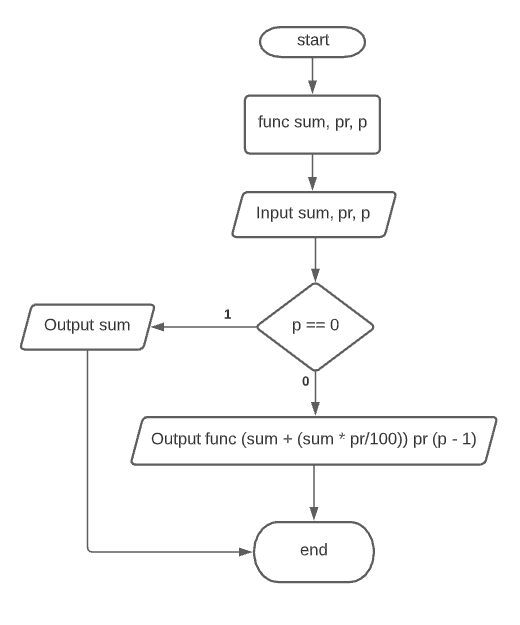
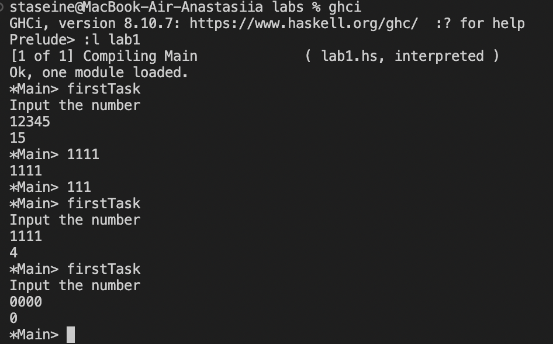
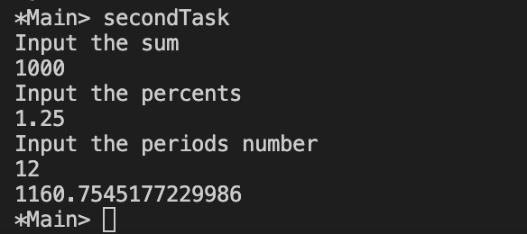

Мета
Сформувати декларативне мислення в галузі програмування завдяки використанню чистих функцій, рекурсій замість циклів, запобіганню даних, що змінюються. Опанувати застосування рекурсивних функцій для обчислювальних процесів.
Умова завдання
1 завдання
Ввести з клавіатури натуральне число n. Знайти суму його цифр, використовуючи рекурентне означення функції f(n):

Умова продовження рекурсії: сума цифр числа дорівнює останній цифрі плюс сума цифр числа без останньої цифри (числа, що ділиться без остачі на 10). Умова закінчення рекурсії: якщо число дорівнює 0, то сума його цифр дорівнює 0.
2 завдання
Вкладник поклав в банк sum грошових одиниць під pr відсотків за один період. Усі дані вводити з клавіатури. Використовуючи рекурсію, визначити величину вкладу по звершенні m періодів часу. Контрольний тест: введені дані: сума вкладу 1000, відсотки за період 1.25, кількість періодів 12, отриманий результат: 1160.75
Структура програми
1 завдання - блок-схема та опис

Код починається з оголошення функції під назвою "func", яка приймає інтегральний тип як вхідні дані та повертає інтегральний тип.
Потім код оголошує змінну під назвою "input" типу Integer, яка є вхідними даними для програми.
Далі він зчитує введені користувачем дані та призначає їх змінній з назвою «a».
Потім він друкує, яке значення буде повернуто з func, якщо йому буде задано будь-яке число від 0 до 10.
Наступний рядок коду починається з до-нотації, за якою йдуть два рядки синтаксису Haskell: putStrLn ("Введіть число") і getLine ().
Це обидві функції, які друкують текст на екрані або зчитують текст із стандартного вводу відповідно.
Перший рядок використовується для друку деяких інструкцій, тоді як другий отримує введення користувача зі стандартного вводу (клавіатура).
Після цих двох рядків йдуть ще три рядки синтаксису Haskell: let a = read input :: Integer; print (func a); let b = read c :: Double; print (func b).
Ці три рядки використовують зіставлення за зразком для призначення значень на основі їх типів змінним з іменами «a», «b» і c відповідно.
Нарешті, після всього цього з’являється ще один do-блок із лише одним оператором усередині: putStrLn ("Input the number").
Код виведе результат функції a на консоль.
Код зчитує ціле число від користувача та зберігає його у вхідній змінній, а потім роздрукує, яким би було це число, якби воно використовувалося як функція.
2 завдання - блок-схема та опис

Код починається з отримання вхідних даних від користувача, які потім передаються до функції під назвою депозит.
Функція приймає три аргументи: суму грошей, яку потрібно внести, скільки їх має надійти з кожного джерела (the sum) і скільки періодів є між депозитами (periods).
Код починається з отримання вхідних даних від користувача, які потім передаються до функції під назвою депозит.
Код призначений для використання в програмі, яка обчислює загальний депозит для заданої суми, відсотків і кількості періодів.
Наведений код має дві основні частини: секцію введення та секцію друку.
Секція введення приймає три значення: суму, відсотки та кількість періодів.
Розділ друку роздруковує результат обчислення за допомогою функції під назвою "депозит".
Обгрунтування вибору середовища та мови програмування
Мова функціонального програмування: Haskell
- Це одна з самих популярних функціональних мов програмування.
- Зручна та обширна документація.
- Звичний синтаксис.
Середовище програмування: Visual Studio Code
- Легкий та зручний редактор коду, який можна використовувати майже для будь-якої мови програмування.
- Має всі необхідні функції для програмування і працює нsабагато швидше в порівнянні з іншими IDE.
Код програми
Задача 1
import Data.List
import System.IO
import Distribution.Compat.CharParsing (integral)
func :: Integral p => p -> p
func 0 = 0
func n = (n `mod` 10) + func (n `div` 10)
firstTask = do
putStrLn "Input the number"
input <- getLine
let a = read input :: Integer
print (func a)
Задача 2
import Data.List
import System.IO
import Distribution.Compat.CharParsing (integral)
deposit :: (Eq t1, Num t1, Fractional t2) => t2 -> t2 -> t1 -> t2
deposit sum _ 0 = sum
deposit sum percents periods = deposit (sum + (sum * percents/100)) percents (periods - 1)
secondTask = do
putStrLn "Input the sum"
inputSum <- getLine
let sum = read inputSum :: Double
putStrLn "Input the percents"
inputPercents <- getLine
let percents = read inputPercents :: Double
putStrLn "Input the periods number"
inputPeriods <- getLine
let periods = read inputPeriods :: Integer
print (deposit sum percents periods)
Результати виконання
Задача 1

Задача 2

>
Висновок
У ході виконання лабораторної роботи було засвоєно використання рекурсії у написанні декларативного коду для виконання обчислень.
У рамках першої задачі було написано програму, що знаходить суму цифр введеного числа за допомогою рекурсивного процесу, а саме звичайної рекурсії.
У рамках другої задачі було написано програму, що визначає величину депозиту по завершенню заданих користувачем періодів. Для вирішення цієї задачі застосована хвостова рекурсія.